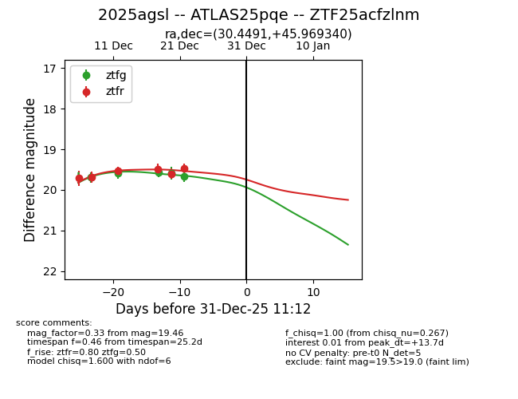
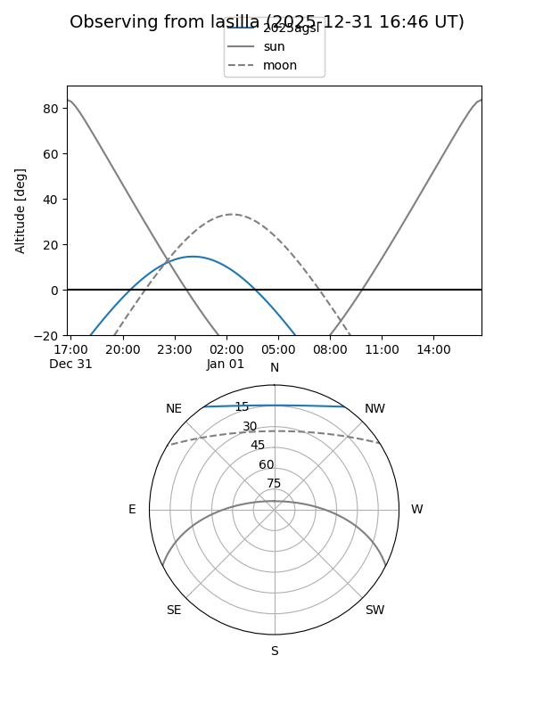
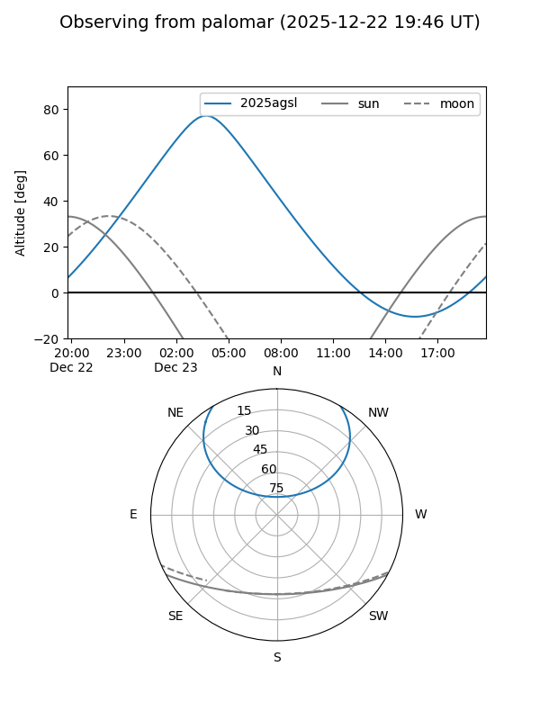

2025agsl
Target 2025agsl at 2025-12-31 16:59
Aliases and brokers:
FINK:
Lasair:
ALeRCE:
TNS:
YSE:
alt names
ZTF25acfzlnm (ztf,fink_ztf)
2025agsl (tns,yse)
ATLAS25pqe (atlas)
Coordinates:
equatorial (ra, dec) = 30.4491,+45.96934
equatorial (HMS+DMS) = 02:01:47.79,+45:58:09.63
galactic (l, b) = (135.5019,-15.17813)
Flags:
Photometry:
last ztfg=19.66, ztfr=19.46
5 ztfg, 6 ztfr detections
Lightcurve

Visibility


Additional plots